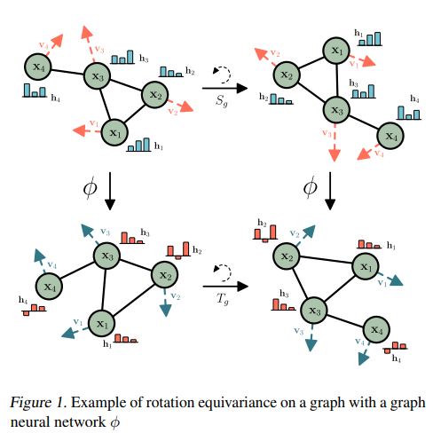
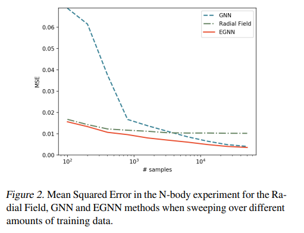

狙い
人工知能（AI）は、近年の科学技術の進展によって私たちの生活に革命をもたらし、未来を創造しています。コンピュータが人間のように思考し、学習し、自ら問題を解決する能力を持つというこの技術は、多くの分野でその効果を発揮しています。医療から自動運転車、日常のスマートフォンのアプリケーションまで、AIはあらゆる場面で私たちの手助けをしており、限りない可能性を秘めています。
論文タイトル一覧
不変グラフニューラルネットワーク
本研究では、グラフ構造データに対して、平行移動、回転、反射などのE(n)変換に不変なグラフニューラルネットワーク（EGNN）を提案した。EGNNは、既存の手法と比べて、高次の表現や球面調和関数などを必要とせずに、単純で効率的なメッセージパッシングアルゴリズムでE(n)不変性を実現した。また、EGNNは3次元空間に限定されずに、任意の次元の空間に拡張できる。EGNNは、動的システムのモデリング、グラフオートエンコーダー、分子特性予測などのタスクで、競合する手法よりも優れた性能を示した。
Published 2022-02-19
E(n) Equivariant Graph Neural Networks
Victor Garcia Satorras, et al. (University of Amsterdam, Netherlands)
https://arxiv.org/abs/2102.09844
E(n) Equivariant Graph Neural Networks
Victor Garcia Satorras, et al. (University of Amsterdam, Netherlands)
https://arxiv.org/abs/2102.09844


【コメント】結晶構造とグラフ理論の考え方を寄り近づけた新しい手法で興味深い。グラフ理論でのモデリングやりたい。
【用語】 グラフニューラルネットワーク（GNN）：グラフ構造データに対して畳み込みやプーリングなどの操作を行うニューラルネットワークの一種。グラフの頂点や辺に特徴ベクトルを割り当てて、メッセージパッシングと呼ばれる手法で隣接する頂点や辺から情報を受け取りながら特徴を更新する。GNNは、順列不変性を持つが、平行移動や回転などの幾何学的な変換には不変ではない。不変性（equivariance）：ある関数がある変換に対して不変であるとは、入力にその変換を施した後に関数を適用することと、関数を適用した後に出力に同じ変換を施すことが等価であることを意味する。例えば、画像に対する畳み込み層は平行移動不変性を持つが、回転不変性は持たない。不変性は、問題の対称性を利用して汎化性能や計算効率を向上させることができる。平行移動（translation）：空間内の全ての点を同じ方向と距離だけずらす変換。平行移動はE(n)群の一部であり、平行移動後も形や大きさは変わらない。例えば、点群(x1,x2,…,xM)に対して平行移動ベクトルg∈Rnを加えると、(x1+g,x2+g,…,xM+g)という点群になる。回転（rotation）：空間内の全ての点をある中心点や軸周りに一定角度だけ回転させる変換。回転もE(n)群の一部であり、回転後も形や大きさは変わらない。例えば、点群(x1,x2,…,xM)に対して直交行列Q∈Rn×nを掛けると、(Qx1,Qx2,…,QxM)という点群になる。
【提案手法】 EGNNは、グラフの頂点に対応する座標xiと特徴hiを持つ。EGNNは、以下の手順でグラフの特徴を更新する。辺の処理：各頂点のペア(i,j)に対して、辺の特徴mijを計算する。このとき、頂点の特徴hi,hjと距離の二乗∥xi−xj∥2を入力とする。この処理は、GNNの辺の処理と同様であるが、距離の二乗が不変性を保証するために追加されている。座標の更新：各頂点iに対して、座標xiを更新する。このとき、辺の特徴mijからスカラー値ϕx(mij)を出力し、それを重みとして(xi−xj)に掛けて足し合わせる。この処理は、GNNにはない独自の処理であり、座標をベクトル場として扱うことで不変性を保証する。特徴の集約：各頂点iに対して、隣接する頂点からの辺の特徴mijを足し合わせて集約する。この処理は、GNNの集約処理と同様である。特徴の更新：各頂点iに対して、特徴hiを更新する。このとき、自分自身の特徴hiと集約した特徴miを入力とする。この処理は、GNNの特徴の更新処理と同様である。
【意義/新規性】 E(n)不変性を持つグラフニューラルネットワークを提案した。既存の手法では、高次元表現や球面調和関数などを用いてE(3)やSE(3)不変性を実現していたが、計算コストが高く3次元空間に限定されていた。本研究では、シンプルで効率的な手法でE(n)不変性を実現し、高次元空間にも拡張可能であることを示した。E(n)不変性が有効である様々なタスクで優れた性能を示した。動的システムのモデリングでは、平行移動や回転に対してロバストな予測が可能であることを示した。グラフオートエンコーダーでは、グラフの対称性問題を解決し、連続空間への埋め込みが改善されたことを示した。分子特性予測では、既存の手法よりもシンプルな構造で競争力のある結果が得られたことを示した。
【用語】 グラフニューラルネットワーク（GNN）：グラフ構造データに対して畳み込みやプーリングなどの操作を行うニューラルネットワークの一種。グラフの頂点や辺に特徴ベクトルを割り当てて、メッセージパッシングと呼ばれる手法で隣接する頂点や辺から情報を受け取りながら特徴を更新する。GNNは、順列不変性を持つが、平行移動や回転などの幾何学的な変換には不変ではない。不変性（equivariance）：ある関数がある変換に対して不変であるとは、入力にその変換を施した後に関数を適用することと、関数を適用した後に出力に同じ変換を施すことが等価であることを意味する。例えば、画像に対する畳み込み層は平行移動不変性を持つが、回転不変性は持たない。不変性は、問題の対称性を利用して汎化性能や計算効率を向上させることができる。平行移動（translation）：空間内の全ての点を同じ方向と距離だけずらす変換。平行移動はE(n)群の一部であり、平行移動後も形や大きさは変わらない。例えば、点群(x1,x2,…,xM)に対して平行移動ベクトルg∈Rnを加えると、(x1+g,x2+g,…,xM+g)という点群になる。回転（rotation）：空間内の全ての点をある中心点や軸周りに一定角度だけ回転させる変換。回転もE(n)群の一部であり、回転後も形や大きさは変わらない。例えば、点群(x1,x2,…,xM)に対して直交行列Q∈Rn×nを掛けると、(Qx1,Qx2,…,QxM)という点群になる。
【提案手法】 EGNNは、グラフの頂点に対応する座標xiと特徴hiを持つ。EGNNは、以下の手順でグラフの特徴を更新する。辺の処理：各頂点のペア(i,j)に対して、辺の特徴mijを計算する。このとき、頂点の特徴hi,hjと距離の二乗∥xi−xj∥2を入力とする。この処理は、GNNの辺の処理と同様であるが、距離の二乗が不変性を保証するために追加されている。座標の更新：各頂点iに対して、座標xiを更新する。このとき、辺の特徴mijからスカラー値ϕx(mij)を出力し、それを重みとして(xi−xj)に掛けて足し合わせる。この処理は、GNNにはない独自の処理であり、座標をベクトル場として扱うことで不変性を保証する。特徴の集約：各頂点iに対して、隣接する頂点からの辺の特徴mijを足し合わせて集約する。この処理は、GNNの集約処理と同様である。特徴の更新：各頂点iに対して、特徴hiを更新する。このとき、自分自身の特徴hiと集約した特徴miを入力とする。この処理は、GNNの特徴の更新処理と同様である。
【意義/新規性】 E(n)不変性を持つグラフニューラルネットワークを提案した。既存の手法では、高次元表現や球面調和関数などを用いてE(3)やSE(3)不変性を実現していたが、計算コストが高く3次元空間に限定されていた。本研究では、シンプルで効率的な手法でE(n)不変性を実現し、高次元空間にも拡張可能であることを示した。E(n)不変性が有効である様々なタスクで優れた性能を示した。動的システムのモデリングでは、平行移動や回転に対してロバストな予測が可能であることを示した。グラフオートエンコーダーでは、グラフの対称性問題を解決し、連続空間への埋め込みが改善されたことを示した。分子特性予測では、既存の手法よりもシンプルな構造で競争力のある結果が得られたことを示した。